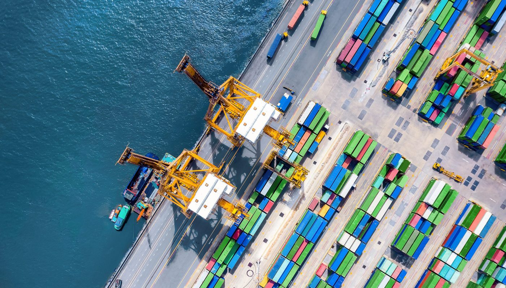
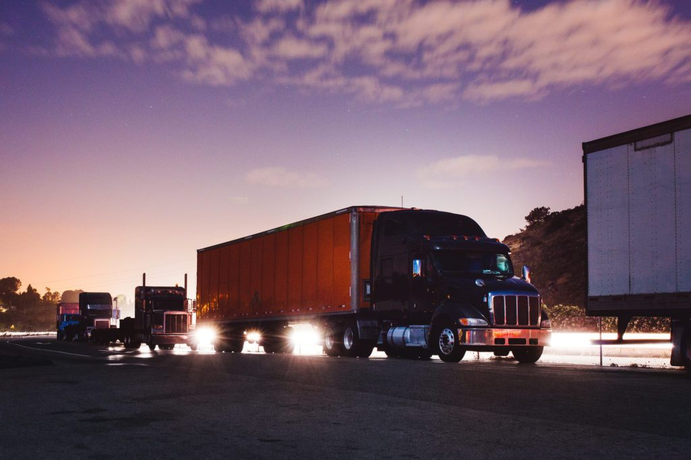
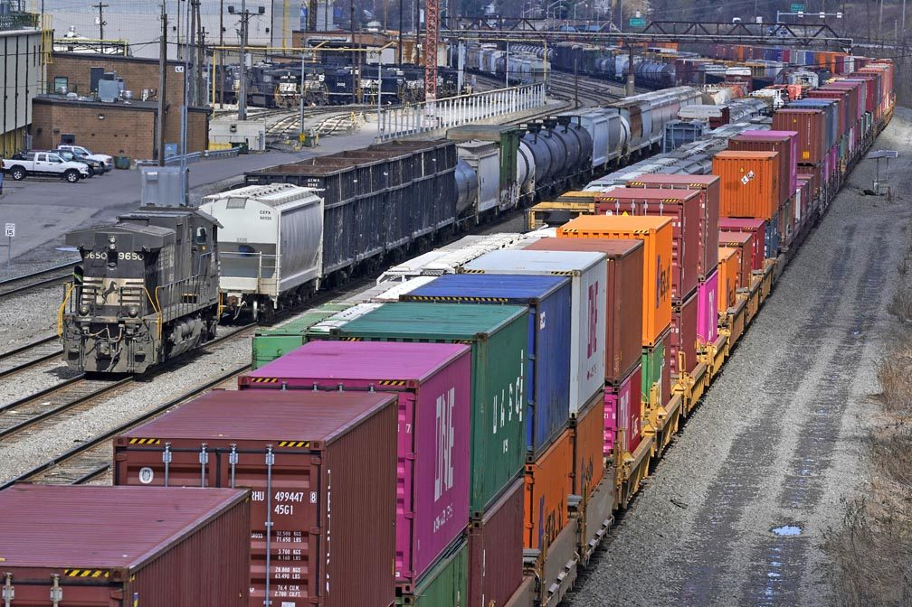

Apertra · Open every market
Sell across borders without hiring a trade department.
Apertra is the operating system for cross-border commerce. Exporters in Canada and the US launch states ship to buyers across Canada, the US, the UK, the Netherlands and Australia on one set of rails: every SKU classified, the true landed cost known before you quote, customs-ready documents generated, freight booked and tracked, and payment protected in escrow until the goods clear. Buyers and importers join free from every US state and every launch country. And the network is built as a mesh, so every new corridor opens on the same rails until all five regions trade in every direction.

Start with the number
Every Apertra shipment starts with a true landed cost, calculated before anyone quotes anyone. Try the calculator:
Landed cost calculator
Know the full cost at the border before you quote a buyer. Try it:
Follow one shipment, door to door
The story of AP-2039: 400 cases of Northwind maple syrup, from a warehouse in Toronto to shelves in Rotterdam. This is what Apertra does on every shipment, on every corridor.

Packed, checked, and stopped early
Northwind palletises 400 cases of maple syrup. Before anything moves, Apertra runs the compliance checklist for the destination and flags one problem: the nutrition panel does not meet EU labelling rules. The labels are reprinted the same day, in Toronto, instead of being seized in Rotterdam.
Caught before departure: EU label format, French and Dutch language requirements
Cleared before it moves
From one shipment record, Apertra generates the commercial invoice, the packing list, and the CETA certificate of origin. The HS code, 1702.20, is confirmed by a licensed reviewer, so the shipment enters the EU at the preferential rate.
Duty on arrival: 0% under CETA, instead of the standard rate
On the water, money protected
The container trucks to Montreal and sails for Rotterdam. The buyer, De Markt BV, has already funded escrow, so Northwind is not carrying the payment risk of a first order with a new partner, and De Markt is not paying for goods it has not received.
Escrow funded before departure, released on customs clearanceCustoms in hours, not days
The entry was pre-filed from the same record, so clearance is a check, not an investigation. The container is released the day it berths, escrow settles to Northwind, and both sides get the complete file.
One audit trail, kept for seven years, for both parties
The last mile is the easy part
A truck takes the pallets from the terminal to De Markt's distribution centre. Fourteen days after it left Toronto, the syrup is on shelves in the Netherlands, and Northwind has a verified trade history that makes its next match, in any of the five regions, easier to win.
Door to door: 14 days, one platform, zero consultantsEvery way freight moves
Apertra books and tracks all four modes on the same shipment record, and prices them into the landed cost before you commit.
Road
The backbone of the Canada-US corridor and every last mile in all five regions. Door to door, no terminal handling.
Toronto to Chicago: 2 to 4 daysOcean
Full and shared containers for the long corridors: to the UK and Netherlands, and across the Pacific to Australia.
Montreal to Rotterdam: 10 to 12 days
Air
For high-value and perishable goods where a week on the water costs more than the flight. Cold-chain options on food corridors.
Toronto to London: 2 to 3 days
Rail
Intermodal rail for heavy, lower-urgency freight across North America and within Europe, at the lowest cost per kilo.
Toronto to Vancouver: 5 to 7 daysMade for the people who make things
Apertra members are not logistics departments. They are owners, farmers, makers and drivers who sell across borders themselves.
Food and agriculture
Grains, pulses, honey, seafood and packaged foods, with biosecurity and labelling handled per destination, including Australia and New Zealand.

Manufacturing
Machinery parts and industrial goods, classified once and documented for repeat shipments on every corridor.
The people on the road
Every Apertra shipment rides with independent carriers and drivers, booked and tracked on the same record as the paperwork.
Warehouses and 3PLs
Export-ready warehousing partners in all five regions, so goods are packed, labelled and staged correctly the first time.
From catalogue to cleared in three moves
Connect your catalogue
Import products once. Apertra classifies every SKU and shows which markets are actually profitable after duty and freight.
Get matched and quote the real number
Apertra matches you with verified buyers and importers on your corridor. Send them a landed cost, not a guess. Documents and the compliance checklist generate from the same shipment record.
Ship and get paid
Book freight in one click. Buyer funds sit in escrow and release when customs clears, with a full audit trail kept for seven years.
The trade Apertra is built for
Sources: Statistics Canada, Eurostat, US SBA, ABS and MBIE figures, as detailed on the Market page.
The biggest movers on the network
Apertra partners trade at real scale. A few of the largest importers and exporters on the mesh:
Great Lakes Grocery
$31MAnnual buying across Canada, Europe and New Zealand: specialty foods, pantry and private label.
Pacific Rim Imports
$24MAnnual imports from Australia, New Zealand and Canada, mostly food and beverage.
De Markt BV
€18MAnnual imports into the EU, the receiving partner in the AP-2039 story above.
Prairie Grains Co.
$16MAnnual exports of grains and pulses to Europe and the US.
Explore Apertra
Every part of the platform, on its own page.
The execution engine: classification, documents, compliance, freight and escrow. Network
Verified buyers, exporters and importers in all five regions. Corridors
Seven launch corridors, one set of rails, the mesh ahead. Pricing
Free to join. You pay when trade moves. Market
Five regions, one mesh, and the revenue model. Assessment
An honest read on the opportunity and the risks.